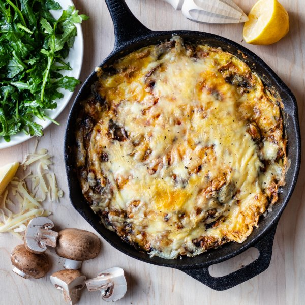

Mushroom, Onion & Mozzarella Frittata with Lemony Arugula

Total Time
35 min
Nutrition (Per Serving)
539.3 kcalCalories
33.4 gProtein
14.7 gCarbs
39.4 gFat
Full nutrition table
| Calories | 539.3 kcal |
| Total fat | 39.4 g |
| Saturated fat | 13.6 g |
| Trans fat | 0.4 g |
| Cholesterol | 535.9 mg |
| Sodium | 562.8 mg |
| Carbohydrates | 14.7 g |
| Fiber | 1.9 g |
| Sugars | 7.3 g |
| Protein | 33.4 g |
| Potassium | 931.1 mg |
| Calcium | 452.5 mg |
| Iron | 3.9 mg |
| Vitamin A | 1099.7 IU |
| Vitamin C | 12.5 mg |
| Vitamin D | 120.7 IU |
Cookware
Ingredients
- 1 (5 oz) pkgbaby arugula
- 1 lbcremini mushrooms
- 12eggs
- 2 clovesgarlic
- 1lemon
- 1 (8 oz) blockmozzarella cheese
- 1 mediumyellow onion
- black pepper
- extra virgin olive oil
- pure maple syrup
- salt
- thyme, dried
Steps
- Wash and dry the fresh produce. (Skip the arugula if it came pre-washed.)1 lb cremini mushrooms
1 lemon
1 (5 oz) pkg baby arugula - Peel and small dice onion; peel and mince garlic. Transfer both to a medium bowl.1 medium yellow onion
2 cloves garlic - Thinly slice the mushrooms.
- Preheat a large ovenproof skillet over medium heat.
- Once the skillet is hot, add oil and swirl to coat the bottom.2 tbsp extra virgin olive oil
- Add onion and garlic to the skillet and cook, stirring occasionally, until softened, about 4 minutes. Reserve bowl for later.
- Increase heat to medium-high and add mushrooms; season with salt and thyme. Cook, stirring occasionally, until mushrooms are softened and liquid has evaporated, about 8-10 minutes.½ tsp salt
½ tsp thyme - Meanwhile, roughly grate the cheese.1 (8 oz) block mozzarella cheese
- Combine eggs, half the cheese, salt, and pepper in the reserved bowl; whisk to combine.12 eggs
½ tsp salt
⅛ tsp black pepper - Preheat oven to broil on high.
- Spread the mushrooms evenly in the skillet. Reduce heat to medium-low and pour in the egg mixture. As eggs set around the edge of the skillet, gently lift cooked portions with a spatula to allow uncooked egg to flow underneath. Cook until bottom and sides are firm but the top is still runny, 5-7 minutes.
- Sprinkle remaining cheese over the frittata. Place skillet in the oven until the top is set, 2-3 minutes.
- Meanwhile, juice the lemon into a medium salad bowl. Add oil, maple syrup, salt, and pepper; whisk to combine the dressing. Add arugula and toss to combine the salad.2 tbsp extra virgin olive oil
2 tsp pure maple syrup
½ tsp salt
¼ tsp black pepper - To serve, cut frittata into wedges and place on plates; top with arugula and enjoy!